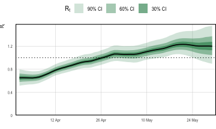
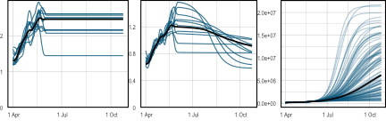
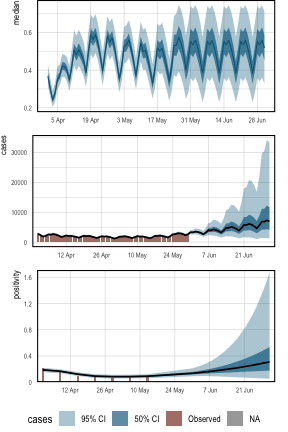

Previous examples conditioned on a single observation series (case and death counts respectively). Simple models were used for describing ascertainment rates. The flu example assumed full ascertainment of infections, while the multilevel example took the IFR to be constant but unknown. Population adjustments were not considered, and both examples modeled the entire history of the epidemic from the first observed cases.
Here we model the trajectory of SARS-CoV-2 in England using data over a two month period from late March 2021 through to the end of May. In doing so, we relax the aforementioned modeling assumptions and demonstrate further capabilities of the package. Population adjustments are applied in order to explicitly account for pre-existing immunity in the population. The model is conditioned on two observation series: daily case counts, and positivity from seroprevalence surveys. This example is inspired by this paper, which uses epidemia to track SARS-CoV-2 at the local authority level in the UK.
Fitting the model to case counts requires a model for the case ascertainment rates (IAR). Unlike in previous examples, we do not assume that this is constant. While the IFR of Sars-CoV-2 may be broadly stable over several weeks or months, the IAR could vary frequently, not least due to changes in testing capacity, surge testing, and the general prevalence of the disease. Therefore we opt instead to infer the time-varying IAR from positivity data, which should provide an “anchor” for the absolute size of the latent infection process. We allow IAR dynamics to be inferred by modeling it as a random walk.
Our goal is to infer recent infection dynamics, and also to project future infection and case counts. These goals do not necessitate a detailed understanding of the fully history of disease dynamics, and is primarily why we limit ourselves to a two month period. Other reasons include that modeling the entire history is computationally demanding and requires more intricate modeling to explain the full trajectory.
First load required packages.
epidemia has a data set EnglandNewCases that contains daily
counts of confirmed SARS-CoV-2 infections in England from the 1st
January 2020 up to and including the 30th May 2021. The data was
downloaded from Public Health England (2020) on the 4nd of June 2021.
data("EnglandNewCases")
data <- EnglandNewCasesThe model will be fit to the most recent two months (60 days) of case count data, starting on the 1st April. We take the first modeled date to be 20 days prior to this initial observation, which is the 12th March. This initial 20 days will be the seeding period.
As in the flu example, we model \(R_t\) as a transformed random walk
with daily updates. In later sections, however, we will make projections
that assume \(R_t\) remains at its current value. For this reason, we
provide a new column in data to control the random walk
increments. This will allow us to “stop” the walk updating at dates
after the 30th May.
The model for \(R_t\) is
\[ R_t = K g^{-1}\left(\beta_0 + w_t\right), \]
where \(K= 7\) and \(g\) is the logit link. The term \(w_t\) is a random walk satisfying the recursion \(w_t = w_{t-1} + \epsilon_t\) and initial condition \(w_{-1} = 0\). The daily updates \(\epsilon_t\) are given a prior \(\epsilon_t \sim \mathcal{N}(0, \sigma)\), and the scale hyperparameter follows \(\sigma \sim \mathcal{N}^{+}(0, 0.05)\). The intercept \(\beta_0\) is assigned a normal prior, so that \(\beta_0 \sim \mathcal{N}(-1, 1)\). This prior has been chosen to reflect our belief that the epidemic was under control at start of March. We have, however, provided a large scale to reflect uncertainty over the initial value. The full transmission model is represented as follows.
rt <- epirt(formula = R(region, date) ~ 1 + rw(time = dt, prior_scale=0.05),
link = scaled_logit(7), prior_intercept = normal(-1,1))Daily recorded cases are consistently above 1000 over the period considered. Given the large infection counts, we do not consider extending the infection model to add variation around the renewal equation. Such extensions would be useful for modeling the epidemic at a finer scale, say at the local authority level. Please refer here for an example of how this is done.
We account for pre-existing immunity through population adjustments, which were described in the model description. The first modeled date is the 12th of March 2021, over a year before SARS-CoV-2 was first detected in England. It is likely that prior infection and vaccination will have induced a degree of immunity within the population. Accounting for this helps to constrain long term forecasts for the size of the susceptible population.
Mathematically, our model describes infections \(i_t\) for \(t>0\) by
\[\begin{align*} i'_t & = R_t\sum_{s < t} i_s \pi_{t-s},\\ i_t &= S_t \left( 1 - \exp\left(-\frac{i'_t}{P}\right)\right), \end{align*}\]where \(P\) is the population size and \(S_t\) is the time-varying susceptible population. We use the same generation distribution \(\pi_k\) as in the multilevel model. The initial susceptible population \(S_{v}\) is given a prior \(S_v \sim \mathcal{N}(0.48, 0.10)\). This is motivated by an ONS antibody survey (Coronavirus (COVID-19) Antibody and Vaccination Data for the UK - Office for National Statistics, n.d.), which estimates that 51% of the population in England would have tested positive for SARS-CoV-2 antibodies between the 8nd March and the 14th March. It is important however to distinguish the presence of antibodies from immunity. An individual’s level of antibodies may be below the required threshold to test positive, however they may have protection through T-cells. Similarly the presence of antibodies does not imply immunity. For these reasons, and due to wide credible intervals for the ONS estimate, we have used a large standard deviation on the prior immune population.
The population of England was estimated to be 56,286,961 as of mid-2019
(Population Estimates for the UK, England and Wales, Scotland and Northern Ireland - Office for National Statistics, n.d.). This is added to data as a static variable.
data$pop <- pop <- 56286961The infection model is expressed as follows.
Models are defined for our two data series: case counts and positivity rates derived from a seroprevalence study. These are discussed in turn.
Letting \(Y^{(1)}_{t}\) denote daily case counts, we model \(Y_t^{(1)} \sim \text{QP}(y^{(1)}_t,d)\) and
\[ y_t = \alpha^{(1)}_{t}\left(\frac{1}{7} \sum_{s=1}^{7} i_{t-s-3}\right), \]
where \(\text{QP}\) denotes the quasi-poisson distribution with mean \(y^{(1)}_t\) and variance-to-mean ratio \(d\), which is given the prior \(d \sim \mathcal{N}^{+}(10,5)\). The assumption here is that infections over the last three days are undetected, and those occurring over the week before are equally likely to be detected.
The IAR \(\alpha_t^{(1)}\) is modeled as a random walk with additional dummy dummy day-of-week variables to account for a clear weekly pattern in the data (see Figure 3). We take
\[ \alpha^{(1)}_t = g^{-1}\left(\beta^{(1)}_0 + w^{(1)}_t + \sum_{k=1}^{6} \gamma_k D_{k,t}\right), \]
where \(g\) is the logit-link, \(\beta_0^{(1)} \sim \mathcal{N}(0,1.5)\) is
an intercept, and \(w_t^{(1)}\) is a random walk following the same model
as the walk for \(R_t\), however starting on the first observation date
(1st April) rather than immediately after the seeding period. The
prior on \(\beta_0^{(1)}\) has a large scale to reflect our prior
uncertainty over the IAR, allowing the posterior to be largely driven by
the positivity data. The terms \(D_{k,t}\) are dummy indicators for the
day of the week, and \(\gamma_k \sim \mathcal{N}(0, 0.5)\) are associated
weekday effects. These terms allow modeling weekly seasonality. First
add the day-of-week factors to data.
data$day <- wday(data$date, label=T)The aforementioned model is defined as follows.
The ONS Infection survey (Coronavirus (COVID-19) Infection Survey, n.d.) provides weekly estimates of positivity rates among the English population. These numbers are based on repeated RT-PCR tests on a representative sample of the population. We leverage this data for the week beginning the 28th March, and for the subsequent 6 weeks. We arbitrarily use Thursday of each week as the representative date for the positivity rates.
ons <- data.frame(date = as.Date("2021-04-01") + 7 * (0:6),
positivity = c(0.21, 0.17, 0.1, 0.08, 0.07, 0.09, 0.09))
data <- left_join(data, ons)Let \(Y_t^{(2)}\) be the observed positivity rate at time \(t\). This is an estimate of the proportion of the population who, at that point of time, would test positive on an RT-PCR test. We model this as \(Y_t^{(2)} \sim \mathcal{N}(y_{t}^{(2)}, \sigma^2)\), where
\[\begin{equation} y_t^{(2)} = \frac{\sum_{s=1}^{14} i_{t-s-3}}{P}. \tag{1} \end{equation}\]
Equation (1) assumes that those infected in the previous three days will definitively test negative, and that everyone infected within the two weeks before this will definitively test positive. All infections occurring before this will not be detected. This is, of course, a simplification. A careful model requires an understanding of the likelihood of testing positive in an RT-PCR test \(k\) days after infection, and also accounting for the sensitivity/specificity of the tests. We have made the above assumption in the absence of such information.
Equation (1) does not fit within our usual framework for observations. In particular, there is no explicit ascertainment rate, and the infection weights \(\pi_k\) do not form a probability distribution. Nonetheless, infections are still weighted linearly, and this model can be represented as follows.
data$off <- 1
ons <- epiobs(formula = positivity ~ 0 + offset(off),
i2o = c(rep(0,3), rep(1,14)) * 100 / pop, link = "identity",
family = "normal", prior_aux = normal(0.01, 2.5e-3))Here we have assigned a prior \(\sigma \sim \mathcal{N}^+(0.01, 0.0025)\). This is motivated by the credible intervals in the ONS study.
The model is fit with the NUTS sampler. In order to ensure a large enough effective sample size, we increase the maximum tree depth for the algorithm and use 4,000 iterations.
fm <- epim(rt = rt, inf = inf, obs = list(cases, ons), data = data,
iter = 4e3, control = list(max_treedepth = 12), seed=12345)## Running MCMC with 4 parallel chains...
##
## Chain 1 Iteration: 1 / 4000 [ 0%] (Warmup)## Chain 2 Iteration: 1 / 4000 [ 0%] (Warmup)## Chain 3 Iteration: 1 / 4000 [ 0%] (Warmup)## Chain 4 Iteration: 1 / 4000 [ 0%] (Warmup)## Chain 2 Iteration: 100 / 4000 [ 2%] (Warmup)
## Chain 1 Iteration: 100 / 4000 [ 2%] (Warmup)
## Chain 3 Iteration: 100 / 4000 [ 2%] (Warmup)
## Chain 4 Iteration: 100 / 4000 [ 2%] (Warmup)
## Chain 4 Iteration: 200 / 4000 [ 5%] (Warmup)
## Chain 1 Iteration: 200 / 4000 [ 5%] (Warmup)
## Chain 2 Iteration: 200 / 4000 [ 5%] (Warmup)
## Chain 3 Iteration: 200 / 4000 [ 5%] (Warmup)
## Chain 4 Iteration: 300 / 4000 [ 7%] (Warmup)
## Chain 2 Iteration: 300 / 4000 [ 7%] (Warmup)
## Chain 1 Iteration: 300 / 4000 [ 7%] (Warmup)
## Chain 3 Iteration: 300 / 4000 [ 7%] (Warmup)
## Chain 4 Iteration: 400 / 4000 [ 10%] (Warmup)
## Chain 2 Iteration: 400 / 4000 [ 10%] (Warmup)
## Chain 3 Iteration: 400 / 4000 [ 10%] (Warmup)
## Chain 1 Iteration: 400 / 4000 [ 10%] (Warmup)
## Chain 4 Iteration: 500 / 4000 [ 12%] (Warmup)
## Chain 2 Iteration: 500 / 4000 [ 12%] (Warmup)
## Chain 3 Iteration: 500 / 4000 [ 12%] (Warmup)
## Chain 1 Iteration: 500 / 4000 [ 12%] (Warmup)
## Chain 4 Iteration: 600 / 4000 [ 15%] (Warmup)
## Chain 2 Iteration: 600 / 4000 [ 15%] (Warmup)
## Chain 3 Iteration: 600 / 4000 [ 15%] (Warmup)
## Chain 1 Iteration: 600 / 4000 [ 15%] (Warmup)
## Chain 4 Iteration: 700 / 4000 [ 17%] (Warmup)
## Chain 2 Iteration: 700 / 4000 [ 17%] (Warmup)
## Chain 3 Iteration: 700 / 4000 [ 17%] (Warmup)
## Chain 4 Iteration: 800 / 4000 [ 20%] (Warmup)
## Chain 1 Iteration: 700 / 4000 [ 17%] (Warmup)
## Chain 2 Iteration: 800 / 4000 [ 20%] (Warmup)
## Chain 3 Iteration: 800 / 4000 [ 20%] (Warmup)
## Chain 1 Iteration: 800 / 4000 [ 20%] (Warmup)
## Chain 4 Iteration: 900 / 4000 [ 22%] (Warmup)
## Chain 2 Iteration: 900 / 4000 [ 22%] (Warmup)
## Chain 3 Iteration: 900 / 4000 [ 22%] (Warmup)
## Chain 1 Iteration: 900 / 4000 [ 22%] (Warmup)
## Chain 4 Iteration: 1000 / 4000 [ 25%] (Warmup)
## Chain 2 Iteration: 1000 / 4000 [ 25%] (Warmup)
## Chain 3 Iteration: 1000 / 4000 [ 25%] (Warmup)
## Chain 4 Iteration: 1100 / 4000 [ 27%] (Warmup)
## Chain 1 Iteration: 1000 / 4000 [ 25%] (Warmup)
## Chain 2 Iteration: 1100 / 4000 [ 27%] (Warmup)
## Chain 3 Iteration: 1100 / 4000 [ 27%] (Warmup)
## Chain 4 Iteration: 1200 / 4000 [ 30%] (Warmup)
## Chain 1 Iteration: 1100 / 4000 [ 27%] (Warmup)
## Chain 2 Iteration: 1200 / 4000 [ 30%] (Warmup)
## Chain 3 Iteration: 1200 / 4000 [ 30%] (Warmup)
## Chain 4 Iteration: 1300 / 4000 [ 32%] (Warmup)
## Chain 1 Iteration: 1200 / 4000 [ 30%] (Warmup)
## Chain 2 Iteration: 1300 / 4000 [ 32%] (Warmup)
## Chain 3 Iteration: 1300 / 4000 [ 32%] (Warmup)
## Chain 4 Iteration: 1400 / 4000 [ 35%] (Warmup)
## Chain 1 Iteration: 1300 / 4000 [ 32%] (Warmup)
## Chain 2 Iteration: 1400 / 4000 [ 35%] (Warmup)
## Chain 3 Iteration: 1400 / 4000 [ 35%] (Warmup)
## Chain 4 Iteration: 1500 / 4000 [ 37%] (Warmup)
## Chain 1 Iteration: 1400 / 4000 [ 35%] (Warmup)
## Chain 2 Iteration: 1500 / 4000 [ 37%] (Warmup)
## Chain 3 Iteration: 1500 / 4000 [ 37%] (Warmup)
## Chain 1 Iteration: 1500 / 4000 [ 37%] (Warmup)
## Chain 4 Iteration: 1600 / 4000 [ 40%] (Warmup)
## Chain 2 Iteration: 1600 / 4000 [ 40%] (Warmup)
## Chain 1 Iteration: 1600 / 4000 [ 40%] (Warmup)
## Chain 3 Iteration: 1600 / 4000 [ 40%] (Warmup)
## Chain 4 Iteration: 1700 / 4000 [ 42%] (Warmup)
## Chain 2 Iteration: 1700 / 4000 [ 42%] (Warmup)
## Chain 1 Iteration: 1700 / 4000 [ 42%] (Warmup)
## Chain 3 Iteration: 1700 / 4000 [ 42%] (Warmup)
## Chain 4 Iteration: 1800 / 4000 [ 45%] (Warmup)
## Chain 2 Iteration: 1800 / 4000 [ 45%] (Warmup)
## Chain 1 Iteration: 1800 / 4000 [ 45%] (Warmup)
## Chain 3 Iteration: 1800 / 4000 [ 45%] (Warmup)
## Chain 4 Iteration: 1900 / 4000 [ 47%] (Warmup)
## Chain 2 Iteration: 1900 / 4000 [ 47%] (Warmup)
## Chain 1 Iteration: 1900 / 4000 [ 47%] (Warmup)
## Chain 3 Iteration: 1900 / 4000 [ 47%] (Warmup)
## Chain 4 Iteration: 2000 / 4000 [ 50%] (Warmup)
## Chain 4 Iteration: 2001 / 4000 [ 50%] (Sampling)
## Chain 1 Iteration: 2000 / 4000 [ 50%] (Warmup)
## Chain 1 Iteration: 2001 / 4000 [ 50%] (Sampling)
## Chain 2 Iteration: 2000 / 4000 [ 50%] (Warmup)
## Chain 2 Iteration: 2001 / 4000 [ 50%] (Sampling)
## Chain 3 Iteration: 2000 / 4000 [ 50%] (Warmup)
## Chain 3 Iteration: 2001 / 4000 [ 50%] (Sampling)
## Chain 1 Iteration: 2100 / 4000 [ 52%] (Sampling)
## Chain 4 Iteration: 2100 / 4000 [ 52%] (Sampling)
## Chain 2 Iteration: 2100 / 4000 [ 52%] (Sampling)
## Chain 3 Iteration: 2100 / 4000 [ 52%] (Sampling)
## Chain 1 Iteration: 2200 / 4000 [ 55%] (Sampling)
## Chain 4 Iteration: 2200 / 4000 [ 55%] (Sampling)
## Chain 2 Iteration: 2200 / 4000 [ 55%] (Sampling)
## Chain 1 Iteration: 2300 / 4000 [ 57%] (Sampling)
## Chain 3 Iteration: 2200 / 4000 [ 55%] (Sampling)
## Chain 4 Iteration: 2300 / 4000 [ 57%] (Sampling)
## Chain 1 Iteration: 2400 / 4000 [ 60%] (Sampling)
## Chain 2 Iteration: 2300 / 4000 [ 57%] (Sampling)
## Chain 3 Iteration: 2300 / 4000 [ 57%] (Sampling)
## Chain 4 Iteration: 2400 / 4000 [ 60%] (Sampling)
## Chain 1 Iteration: 2500 / 4000 [ 62%] (Sampling)
## Chain 2 Iteration: 2400 / 4000 [ 60%] (Sampling)
## Chain 3 Iteration: 2400 / 4000 [ 60%] (Sampling)
## Chain 1 Iteration: 2600 / 4000 [ 65%] (Sampling)
## Chain 4 Iteration: 2500 / 4000 [ 62%] (Sampling)
## Chain 2 Iteration: 2500 / 4000 [ 62%] (Sampling)
## Chain 3 Iteration: 2500 / 4000 [ 62%] (Sampling)
## Chain 1 Iteration: 2700 / 4000 [ 67%] (Sampling)
## Chain 4 Iteration: 2600 / 4000 [ 65%] (Sampling)
## Chain 2 Iteration: 2600 / 4000 [ 65%] (Sampling)
## Chain 3 Iteration: 2600 / 4000 [ 65%] (Sampling)
## Chain 1 Iteration: 2800 / 4000 [ 70%] (Sampling)
## Chain 4 Iteration: 2700 / 4000 [ 67%] (Sampling)
## Chain 1 Iteration: 2900 / 4000 [ 72%] (Sampling)
## Chain 2 Iteration: 2700 / 4000 [ 67%] (Sampling)
## Chain 3 Iteration: 2700 / 4000 [ 67%] (Sampling)
## Chain 4 Iteration: 2800 / 4000 [ 70%] (Sampling)
## Chain 1 Iteration: 3000 / 4000 [ 75%] (Sampling)
## Chain 2 Iteration: 2800 / 4000 [ 70%] (Sampling)
## Chain 3 Iteration: 2800 / 4000 [ 70%] (Sampling)
## Chain 1 Iteration: 3100 / 4000 [ 77%] (Sampling)
## Chain 4 Iteration: 2900 / 4000 [ 72%] (Sampling)
## Chain 2 Iteration: 2900 / 4000 [ 72%] (Sampling)
## Chain 3 Iteration: 2900 / 4000 [ 72%] (Sampling)
## Chain 1 Iteration: 3200 / 4000 [ 80%] (Sampling)
## Chain 4 Iteration: 3000 / 4000 [ 75%] (Sampling)
## Chain 1 Iteration: 3300 / 4000 [ 82%] (Sampling)
## Chain 3 Iteration: 3000 / 4000 [ 75%] (Sampling)
## Chain 2 Iteration: 3000 / 4000 [ 75%] (Sampling)
## Chain 4 Iteration: 3100 / 4000 [ 77%] (Sampling)
## Chain 1 Iteration: 3400 / 4000 [ 85%] (Sampling)
## Chain 3 Iteration: 3100 / 4000 [ 77%] (Sampling)
## Chain 2 Iteration: 3100 / 4000 [ 77%] (Sampling)
## Chain 4 Iteration: 3200 / 4000 [ 80%] (Sampling)
## Chain 1 Iteration: 3500 / 4000 [ 87%] (Sampling)
## Chain 3 Iteration: 3200 / 4000 [ 80%] (Sampling)
## Chain 2 Iteration: 3200 / 4000 [ 80%] (Sampling)
## Chain 4 Iteration: 3300 / 4000 [ 82%] (Sampling)
## Chain 1 Iteration: 3600 / 4000 [ 90%] (Sampling)
## Chain 3 Iteration: 3300 / 4000 [ 82%] (Sampling)
## Chain 2 Iteration: 3300 / 4000 [ 82%] (Sampling)
## Chain 1 Iteration: 3700 / 4000 [ 92%] (Sampling)
## Chain 4 Iteration: 3400 / 4000 [ 85%] (Sampling)
## Chain 3 Iteration: 3400 / 4000 [ 85%] (Sampling)
## Chain 2 Iteration: 3400 / 4000 [ 85%] (Sampling)
## Chain 1 Iteration: 3800 / 4000 [ 95%] (Sampling)
## Chain 4 Iteration: 3500 / 4000 [ 87%] (Sampling)
## Chain 3 Iteration: 3500 / 4000 [ 87%] (Sampling)
## Chain 2 Iteration: 3500 / 4000 [ 87%] (Sampling)
## Chain 1 Iteration: 3900 / 4000 [ 97%] (Sampling)
## Chain 4 Iteration: 3600 / 4000 [ 90%] (Sampling)
## Chain 1 Iteration: 4000 / 4000 [100%] (Sampling)
## Chain 1 finished in 103.9 seconds.
## Chain 3 Iteration: 3600 / 4000 [ 90%] (Sampling)
## Chain 2 Iteration: 3600 / 4000 [ 90%] (Sampling)
## Chain 4 Iteration: 3700 / 4000 [ 92%] (Sampling)
## Chain 3 Iteration: 3700 / 4000 [ 92%] (Sampling)
## Chain 2 Iteration: 3700 / 4000 [ 92%] (Sampling)
## Chain 4 Iteration: 3800 / 4000 [ 95%] (Sampling)
## Chain 3 Iteration: 3800 / 4000 [ 95%] (Sampling)
## Chain 2 Iteration: 3800 / 4000 [ 95%] (Sampling)
## Chain 4 Iteration: 3900 / 4000 [ 97%] (Sampling)
## Chain 3 Iteration: 3900 / 4000 [ 97%] (Sampling)
## Chain 2 Iteration: 3900 / 4000 [ 97%] (Sampling)
## Chain 4 Iteration: 4000 / 4000 [100%] (Sampling)
## Chain 4 finished in 117.0 seconds.
## Chain 3 Iteration: 4000 / 4000 [100%] (Sampling)
## Chain 3 finished in 117.7 seconds.
## Chain 2 Iteration: 4000 / 4000 [100%] (Sampling)
## Chain 2 finished in 118.9 seconds.
##
## All 4 chains finished successfully.
## Mean chain execution time: 114.4 seconds.
## Total execution time: 119.1 seconds.Figure 1 plots credible intervals for \(R_t\) over the two month period for which we have data. The model appears confident that \(R_t\) has risen above \(1\) over this time, and indeed daily cases appear to be rising as of the end of May. The credible intervals widen towards 30th May because there is a lag between reproduction numbers and recording cases.
## Running standalone generated quantities after 1 MCMC chain...
##
## Chain 1 finished in 0.0 seconds.
Figure 1: \(R_t\) in England over the period starting on the 1st April 2021 and ending the 30th May 2021
The role of the population adjustment in this model is best understood
by looking at long term forecasts. As was shown in the multilevel example, to make forecasts we have to construct a new data
frame. This can be passed as the newdata argument to
epidemia’s plotting functions.
fut <- tibble(date = max(data$date) + seq_len(150), region = "England",
cases = -1, dt = max(data$date), positivity = -1, off = 1,
pop = data$pop[1])
fut$day <- wday(fut$date, label=T)
newdata <- rbind(data, fut)For all dates after the modeled period, the dt column is equal
the the final modeled day (30th May). In effect, this fixes the random
walks for \(R_t\) and \(\alpha_t^{(2)}\) at their most recent value. All
forecasts made here are conditional on this assumption.
Figure 2 forecasts both \(R_t\) and cumulative
infections. The leftmost panel shows the unadjusted
reproduction number, which we denote by \(R_t^u\). This is the value of
\(R_t\) if the entire population were susceptible, and is
the quantity modeled by epirt(). The adjusted \(R_t\) is
then taken to be
\[ R_t = \frac{S_{t-1}}{P} R^{\text{u}}_t. \]
Figure 2 shows that \(R_t^u\) remains pathwise constant over the projected period. \(R_t\) on the other hand falls smoothly as the susceptible population is diminished. Cumulative infections also taper out as the reduction in \(S_t\) causes \(R_t\) to fall below \(1\). The population adjustment serves to constrain long-term forecasts for the total size of the population. Without this adjustment infections could continue to rise exponentially over time.
## Running standalone generated quantities after 1 MCMC chain...
##
## Chain 1 finished in 0.0 seconds.## Running standalone generated quantities after 1 MCMC chain...
##
## Chain 1 finished in 0.0 seconds.## Running standalone generated quantities after 1 MCMC chain...
##
## Chain 1 finished in 0.0 seconds.
Figure 2: Long term forecasts for \(R_t\) and infections, continuing until the 27th October 2021. The median is plotted in black, while sample paths are in blue. Left shows the unadjusted \(R_t\), while the center shows adjusted \(R_t\). The right plot shows projected infections over time. These plots are produced with epidemia’s spaghetti plot functions.
The top panel of Figure 3 shows the IAR over time.
The IAR exhibits strong weekday effects, and appears to increase during
the first half of April. The pattern repeats after the 30th May
because we have stopped the random walk. The bottom two plots
demonstrate that the model is able to fit the observed data well. These
plots have been generated with plot_linpred() and plot_obs().
## Running standalone generated quantities after 1 MCMC chain...
##
## Chain 1 finished in 0.0 seconds.## Running standalone generated quantities after 1 MCMC chain...
##
## Chain 1 finished in 0.0 seconds.
Figure 3: Historical estimates for IAR, daily cases, and positivity rates. Also included are 1 month forecasts for each quantity. The top panel presents the IAR over time. For illustration, the daily effects have been excluded from this. The center shows daily case counts, and the bottom gives positivity.
The primary purpose of this example is to demonstrate advanced modeling
in epidemia. The model itself has many limitations, These include
the quite naive specification of the prior on \(S_t\), and not accounting
for vaccinations during the modeled period. In addition the i2o
argument used in the observational models is not motivated by data from
previous studies.